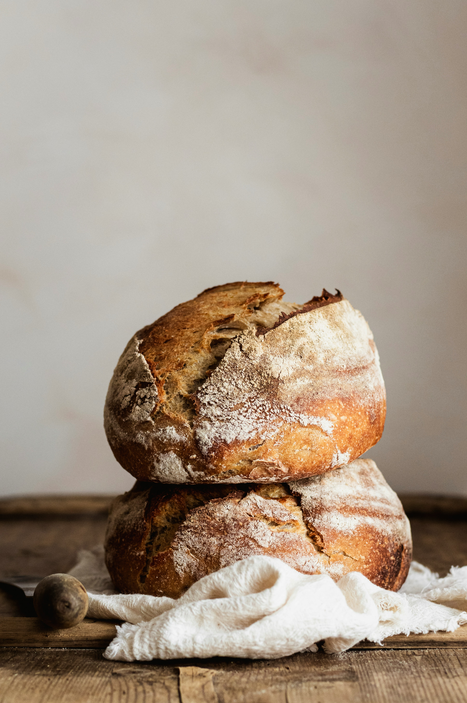

Sourdough Bread

Ingredients
- 100g Sourdough Starter
- 400g Bread Flour
- 55g Whole Wheat Flour
- 10g Salt
- 345g Water
Recipe
- Mix soursough starter, flour, salt and water in a bowl until combined.
- Let dough rest for 1 hour, then "pull" one side up and fold it over on top of the dough. Repeat until you make a ball.
- Repeat the 1 hour rest, and pull/fold 3 times.
- After the 4th pull and fold place the dough on a floured surface and shape into a tight ball.
- Place the dough shooth side down into your basket and rest in the fridge for 8-24 hours.
- When you're ready to bake, cut the dough down the midle with a razor blade and place into a dutch oven.
- Bake for 25 minutes at 475, remove the lid and bake for 25 minutes at 450.